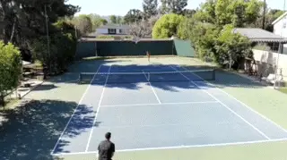
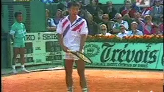
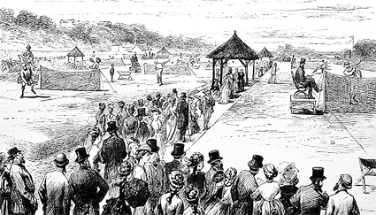
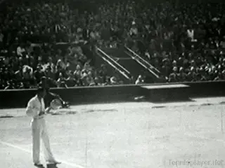

Is the Underhand Serve Underhanded?¶
Rocky Lang¶

What reactions do players get from an underhand serve?
On an early fall day in the quiet residential community of Tarzana, California, I was warming up on court 7, while a foursome was playing doubles on an adjacent court.
They were solid clubbers playing social tennis--weekend warriors who come to play with knee braces, arm braces and then cool down with ice packs on various parts of their bodies.
Then something happened. One of the four, Little Mikey, as we call him, served an underhand serve to his opponent Butch for an ace. And Butch's head exploded off his shoulders.
He let out a guttural scream, marched around the net and pointed a threatening finger at Little Mikey. Everyone became silent, waiting to hear what would come next. \"If you do that one more time, I am walking off this court and I will never, ever play with you again!\"
I'm a pretty good player, rated a 4.5, and I personally don't think the underhand serve is underhanded. But Butch obviously did.

Michael Chang's famous underhand serve against Ivan Lendl.Chang Did It
Michael Chang used an underhand serve famously at The French Open in 1989 when he played Ivan Lendl and went on to win the title. Martina Hingis did the same to Steffi Graf at Roland Garros in the 1999 final.
Tomas Berdych hit one in Montreal in 2013. Last year, Bernard Tomic used it at the Vienna Open. Bobby Riggs even used the underhand serve against me in a money match in Palm Springs in 1980. (He won.)
Dave Sivertson, a master pro and a winner of the 2017 World Team Championships in the 65 and over division says, \"The underhand serve is an incredibly useful tool in the right situations. It is a disrupter, and can also be a game changer.\"
Said Jimmy Parker, holder of 132 Gold Balls, \"I have wondered if the reaction to the underhand serve is a cultural thing.\"
While in Argentina playing a doubles tournament, Parker underhanded the serve to his Argentine opponent who apparently felt his manhood had been disrespected. \"The guy fell apart as he spent the rest of the match trying to take my head off. It was an easy win for us.\" Parker went on to say.
\"The underhand serve is just another shot to use, nothing more and nothing less. I don't try to be deceptive when using it, and in fact, people now expect it from me,\" he added.
Underhand Was the Original

In the 19th century when the net was 4 feet high the underarm serve was the norm.
What most people don't know is that when tennis was being born, the underhand serve was the norm. The net was quite a bit higher, approximately four feet high and the server had to underhand the serve just to get the ball over the net. The serve at that point was just a way to start the point.
However, in 1882, the net was lowered to 36 inches at the center strap and 42 inches at the posts. With this change, it became more effective to serve the ball from an overhand position.
In the 20th century the overhand serve became a huge weapon with players like Bill Tilden and Ellsworth Vines blasting balls for easy points. But the underhand serve was never declared illegal or unethical. Technically it was just another possible shot.
Butch, the ballistic club player, might as well have said that the drop shot is illegal, or that the curveball in baseball or the reverse in football are also unethical and unfair. So, why the outrage? Lobbers, dinkers, pushers, and drop shotters, all drive people crazy, but nothing drives people crazier than the underhand serve.

In the 20th century with Bill Tilden and others the overhand serve became a weapon.
Joel Drucker, a writer for Tennisplayer, Tennis magazine and the Tennis Channel told me this: \"When competing, we often live on a thin knife's edge between tranquility and tension. The rarity of seeing an underhand serve --and the challenge of having to deal with a ball that's potentially quite short and spinning in previously unseen and difficult directions -- can send someone right over the cliff.\"
Just last week at the Monte Carlo Masters, Tennisplayer contributor Craig O'Shannessy suggested somebody should try an underarm serve against Rafael Nadal.
\"Rafa is standing to receive the serve so far back that if you are behind the court, you can't see him if you are sitting in the stands,\" Craig said.
\"It would be a perfectly legitimate tactic and would disrupt the way he is playing at the moment.\"
Blasting
Of course, we see club players blasting balls everywhere, over hitting and doing multiple other things that are outside of their talent box. They do it for a reason. They like the concept of the winner, they like the ace, they like the big shot. Even if they lose badly, they will tell you about the point at 15-40 when they crushed a ball down the line for a winner.
They won't remember the next three shots they missed by three feet. And so, when a player lines up to serve and then wickedly spins an underhand serve that hits the court surface and wildly spins away from the receiver, that guy's worldview has been destroyed.
Now one of two things will happen. The guy goes nuts and calls you names and threatens to attack. Or more rarely, a light bulb goes on and he considers doing it himself at the next opportunity.
I use the underhand serve to give my arm a break---and as a tactic.
Personally, I have had significant arm issues and I have developed an underhand serve that I use occasionally to give my arm a break. However, I also use it when I see my opponent standing so far back behind the baseline that he's pretty much in another county.
To have an effective underhand serve takes practice, just like any other shot. There is a skill to it, a technique. How hard do you slice the ball, do you put a fast slice on it or a slow slice?
How will you anticipate where the return goes and what is the connecting shot after that? It's not, or shouldn't be, just a spur of the moment impulse. It takes the same consideration as any other shot you learn to master.